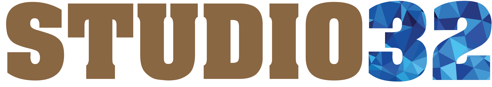
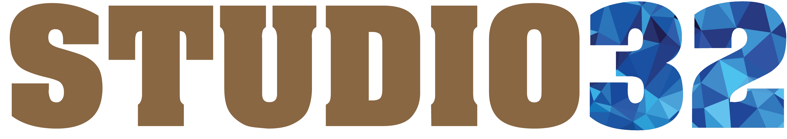

Full Mouth Rehabilitation
What is full mouth rehabilitation/reconstruction?
Full mouth reconstruction or rehabilitation involves the process of rebuilding and simultaneously restoring all the teeth in a patient’s mouth. Full mouth rehabilitation is a highly individualized treatment which involves various treatment modalities to create the correct relationship between gums, bones, muscles, and teeth.
With full-mouth reconstruction the entire mouth is restored to a more comfortable bite and less stress in the jaw and neck.
What is the reason for such severe damage to the teeth?
The mouth is a complex machine; without a proper bite enormously destructive forces begin to attack teeth. Chewing can become impaired, teeth can become worn, the jaw and neck can become sore, and even migraines can occur. Crowded teeth, poor dental hygiene, age of your teeth, improperly contoured fillings and crowns, non replacement of extracted teeth – all can contribute to this condition. Every time your jaw closes, the damage continues.
Who is a candidate for full mouth reconstruction?
People with severe dental problems are candidates for a full mouth reconstruction. The need for full mouth rehabilitation may arise from:
Teeth that have been lost due to decay or trauma
Teeth that have been injured or fractured.
Teeth that have become severely worn as a result of long-term acid erosion (foods, beverages, acid reflux) or tooth grinding.
Ongoing complaints of jaw, muscle and headache pain requiring adjustments to the bite (occlusion).
In addressing and correcting these problems, not only do patients find relief, improved function and better oral health, but they also are delighted to achieve a beautiful smile line and more youthful appearance.
What are the different treatments involved in a full mouth rehabilitation?
Full mouth reconstructions combine aesthetics with the science of restorative dentistry to improve the health, function, and beauty of the smile. Full mouth rehabilitation may include any or all of the following treatments: Root canals
Crowns (caps)
Dental bridges
Dental veneers
Dental implants
Teeth whitening
Fillings
Orthodontics may also be employed to help properly position the jaw and align the teeth
Gum treatment
Full mouth reconstruction typically involves a team of dental specialists like restorative dentists (performing procedures like crowns, bridges and veneers), endodontists (specializing in the tooth pulp), periodontists (specializing in the gums), oral surgeons and orthodontists (specializing in tooth movements and positions).
How many visits will be required for a full mouth treatment?
At your first visit, the dentist will examine your mouth to determine the extent of the problem and the treatment options that can be used. Most full mouth reconstructions involve multiple phases and office visits, depending on your situation.
Why is Studio 32 the ideal choice for full mouth rehabilitation?
Due to the superior service and cutting-edge dental techniques that are the hallmarks of our practice, Studio 32 is an obvious choice for those in need of full mouth rehabilitation. In addition to our highly educated team of specialists, our world-class dental laboratory and technicians help to set us apart from other practices. We believe that the result of full mouth rehabilitation is essentially a work of art, and our specialists adapt the role of talented artists working to best serve your needs. Your customized treatment plan will allow you to restore health, beauty, and function to your mouth in the most efficient, cost-effective way possible. At our practice, many of our highly satisfied patients have expressed the sentiment that a new set of teeth has made them feel as if they had a new lease on life.